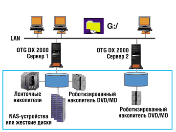
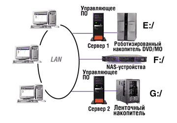
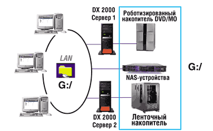

Иван Скудин,
корпорация "Электронный архив"
i-skudin@prosoft-m.ru
Технология виртуализации обеспечивает более легкий и эффективный способ доступа к корпоративным хранилищам данных.
Виртуализацию можно определить как отображение информации, хранящейся на любом количестве разнообразных носителей и устройств, в виде единого централизованного хранилища - "виртуального пула" корпоративных данных. Эта технология обеспечивает более легкий и эффективный способ доступа к корпоративным хранилищам данных. Благодаря виртуализации уменьшается суммарная стоимость хранения данных, в то время как ценность этих данных для бизнеса значительно увеличивается. Согласно этой концепции пользователи и приложения (равно как и ИТ-администраторы) получают единое логическое представление данных внутри пула и прямой доступ к необходимой информации, где бы она ни хранилась (рис. 1). Вся сложность инфраструктуры хранения информации скрыта от пользователя под неким абстрактным слоем, существующим отдельно от физических устройств хранения.
|  | Рис. 1. Виртуализация корпоративной системы хранения данных.
|
Почему так важна виртуализация
Согласно последним исследованиям, проведенным университетом Беркли (Калифорния), в мире ежегодно генерируется от 1,5 до 2 эксабайт оригинальных данных (1 эксабайт равен 1018 символов). Этот информационный взрыв обусловлен использованием бизнес-приложений, обрабатывающих большие реляционные базы данных, графику, видео и звук (Rich Media Applications). Службы взаимоотношений с клиентами (CRM-системы), ERP-системы и особенно хранилища БД с каждым годом становятся все более требовательными к объемам. Среднее хранилище базы данных на сегодняшний день занимает 0,5-1 Тбайт и увеличивается за год на 72%. В 2000 г. из общего объема устройств хранения примерно 35 петабайт, или 12%, приходилось на приложения, использующие хранилища баз данных. Ожидается, что к 2003 г. спрос достигнет 250 петабайт.
Приложения для научных исследований (включая специализированные базы данных) вырабатывают огромные объемы данных. Изучение генома человека, обработка сейсмических данных и нефтехимические исследования потребуют петабайтных хранилищ данных уже в ближайшие несколько лет. Появляется также спрос на устройства хранения данных и в медицинских учреждениях - как следствие перевода медицинских записей, рентгеновских снимков и других традиционных форм в цифровой вид.
Все служащие корпораций, использующие электронную почту, знают, что хранение почтовых сообщений - серьезная проблема. В этой области спрос на устройства хранения данных обуславливается не столько увеличением числа принимаемых и отправляемых электронных сообщений, сколько объемными вложениями в почтовые сообщения - графическими, звуковыми и видеофайлами. В 2000 г., по оценкам экспертов, объем электронной почты в архивах всего мира находился в интервале от 2 до 4 петабайт.
Организации должны постоянно перемещать данные в архив, чтобы уберечь свои основные сетевые ресурсы от беспомощного увязания в потоках информации и защитить важную для организации информацию от возможного уничтожения. Хорошей новостью здесь можно считать появление новых технологий, отвечающих требованиям к увеличению объемов систем хранения информации. В 1980 г. средняя цена на диски равнялась 3400 долл. за один мегабайт. Оценки расходятся, но в наши дни средняя стоимость одного мегабайта упала до отметки ниже 10 центов, в то время как объемы самих дисков увеличились во много тысяч раз. В настоящее время только 10% цифровых данных во всем мире находится на магнитных дисках - остальные 90% хранятся на сменных носителях, таких, как ленты, оптические диски и съемные диски малого диаметра. Стоимость каждого мегабайта у этих устройств значительно ниже, чем у магнитного диска, что делает их привлекательным решением для архивирования и хранения резервных копий критически важных данных. Параллельно развиваются и другие технологии вторичного накопления данных - роботизированные накопители общего доступа, картриджи, оснащенные микропроцессорами, и т. п.
Плохая же новость состоит в том, что результатом реализации систем хранения на предприятиях часто оказывается появление отдельных "островов" архивных данных на разных носителях в разных устройствах, работающих под управлением разных операционных систем и часто физически разнесенных на большие расстояния. Подобные "острова" неэффективны, их обслуживание требует значительных затрат средств и труда нескольких администраторов. Для максимально эффективного использования всех ресурсов необходимы программные решения, которые строго связывали бы жесткий диск с носителями других видов.
Расширенный доступ
Однако сам по себе объем всех устройств хранения - это лишь часть проблемы управления корпоративными данными. Вне зависимости от количества и качества собранной информации, ее ценность для бизнеса теряется, если невозможно получить доступ к нужным данным в нужный момент. Традиционные системы оффлайнового резервного копирования помогают разгрузить серверы и обеспечивают надежное хранение копий данных для восстановления в случае краха системы, но при этом ни пользователи, ни приложения не могут получить доступ к информации без помощи ИТ-отдела - данные, находящиеся на "островках", не используются для решения повседневных задач, а это противоречит самой цели сохранения информации.
Чтобы сохранить конкурентоспособность, фирмам требуется доступ к собственной информации в любое время и в любом месте. Для повышения работоспособности и отказоустойчивости систем хранения данных используют репликацию данных, кластеризацию и передачу управления на другое устройство в случае отказа (failover). Кроме того, технологии резервного копирования и восстановления обладают функциями последовательного и "мгновенного" копирования критически важных данных. Наконец, снижение нагрузки на серверы за счет перемещения нечасто используемых данных на альтернативные подсистемы хранения также может ускорить резервное копирование и восстановление, одновременно улучшая доступность.
Но и тут размножение отдельных "островов" данных с различными технологиями управления и сложными конфигурациями часто становится барьером для доступа приложений и пользователей к этим данным.
Влияние на стоимость владения
Растущие требования к объему устройств хранения и необходимость полного доступа к ним увеличивают общую стоимость владения информационными системами. Организации тратят на закупку новых и новых накопителей все больше и больше средств. Стоимость хранения одного мегабайта снизилась, но суммарные затраты на оборудование и ПО продолжают расти. До сих пор 80% устройств хранения подключены непосредственно к серверам, что и для серверов, и для устройств хранения может снижать коэффициент использования или увеличивать нагрузки. В подобной среде всегда возникает момент, когда требуется новый сервер для поддержки тех же самых традиционных устройств хранения. Кроме того, многие корпорации регулярно проводят переоценку и частичную замену своих систем хранения.
Неэффективная система хранения становится также причиной увеличения затрат людских ресурсов - это одни из самых больших непрямых затрат, связанных с увеличением объема электронных архивов. Неэффективное администрирование систем хранения способно даже парализовать работу целой корпорации, например, если пользователи не могут приступить к работе до окончания резервного копирования. Квалифицированные администраторы отрываются от выполнения важных дел и одновременно делают одну и ту же работу - поддерживают свои архивные "островки". Современные инструменты администрирования архивных систем позволяют одному администратору эффективно управлять менее чем 1 Тбайт из объема систем хранения, непосредственно подключенных к серверу, и 4 Тбайт из объема сетевых накопителей. Эксперты полагают, что к 2005 г. средний объем систем хранения возрастет до 53 Тбайт. Если проблема не будет грамотно решена, количество администраторов, необходимых для поддержания работоспособности инфраструктуры хранения данных, вскоре превысит разумные пределы.
Большое значение имеют такие показатели, как стоимость вынужденного простоя, неадекватной готовности к аварийной ситуации и стоимость неполного использования всех устройств хранения. Организации должны своевременно получать доступ ко всем своим жизненно важным данным, как бы они ни были сложны, поскольку, в зависимости от типа и критичности данных, убытки компаний за один час простоя могут достигать 250 тыс. долл.
Три решения
Виртуализация может принимать различные формы; соответственно, различаются и средства, ее реализующие. В целом системы виртуализации разделяются на три категории. Первая - это подсистемы хранения. Они обеспечивают абстрактный уровень, позволяющий администратору распределять логическую систему представления, видимую с сервера, на физические устройства хранения. Физическими устройствами - наборами дисков в закрытом корпусе - управляют контроллеры, которые обеспечивают также дополнительную функциональность RAID. Различные уровни RAID виртуализуют хранение, выделяя определенный объем хранения из общего пула; при этом физическое местоположение данных относительно прозрачно для пользователя. Этот тип виртуализации хорошо подходит для сред с малыми требованиями к гетерогенности.
Системы, управляемые RAID-контроллерами, позволяют оптимизировать характеристики дисковых приводов и настраивать конфигурации RAID-массивов в зависимости от требований к защите данных, скорости и отказоустойчивости. Недостатки подобного типа виртуализации становятся явными в свете экспоненциального роста данных, вырабатываемых современными приложениями. Но объемы отдельных подсистем ограничены, и в случае превышения пределов вместимости требуется добавлять новые устройства хранения. При этом степень виртуализации становится недостаточной - системный администратор вынужден управлять каждой подсистемой в отдельности, не имея возможности агрегировать устройства и обеспечить неограниченный пул хранения для потребителей на уровне подсистемы.
Второй вид систем виртуализации - сетевые системы. Они перемещают виртуализацию на уровень выше подсистемы хранения, что имеет смысл, когда виртуализацией можно управлять централизованно, независимо от отдельно взятых подсистем. В последнее время появилось несколько решений, обеспечивающих виртуализацию в сетях хранения SAN. С этими решениями связано много новых определений: лексикон системных администраторов пополнили термины "синхронная виртуализация", "асинхронная виртуализация", "виртуализация в автономном режиме", "виртуализация в потоке данных".
В 2001 г. доля сетевых хранилищ SAN и NAS составляла около 20% в общем объеме установленных устройств. До 80% реализованных на сегодняшний день систем хранения построены с использованием DAS (устройств хранения, непосредственно подключаемых к серверу). Системы DAS по-прежнему широко распространены - организации расходовали значительные средства на их установку, а многие пользователи подсознательно считают SAN и NAS дорогостоящими, трудными в установке и монтаже, плохо управляемыми и плохо совместимыми на уровне отдельных устройств. Существующие решения для сетевой виртуализации обычно строятся вокруг сетей хранения на базе Fibre Channel и IP. Подобные решения малоэффективны для сред, состоящих из DAS или совмещающих в себе DAS, NAS и SAN.
Благодаря сетевой виртуализации серверы, подключенные к SAN, делают определение местоположения данных достаточно прозрачным, тем не менее эта технология еще относительно нова, некоторые проблемы в ней остаются неразрешенными.
Самая эффективная форма виртуализации в традиционной ИТ-среде - серверная виртуализация, которая обеспечивает соответствующую функциональность для всех архитектур хранения, включая DAS, NAS и SAN. В рамках этой технологии на некоторых (или даже на всех) серверах в клиентской сети устанавливаются программные агенты, которые обеспечивают доступ к данным, находящимся на любом устройстве, в любом месте сети. Этот подход позволяет объединять уже используемые приложениями вторичные накопители, а также стратегии хранения near-line и off-line. Доступ к данным, независимо от их местоположения, можно получить через LAN, SAN и WAN. Инструменты управления серверной виртуализацией основаны на таких зрелых, хорошо известных стандартах, как XML, RPC и TCP/IP.
Функции серверной виртуализации реализованы в программах для управления логическими томами и иерархического управления устройствами хранения (HSM). Средство HSM автоматически управляет устройствами на всех уровнях иерархии и обеспечивает приложениям прозрачный доступ к данным, независимо от их местоположения. Более того, администратор за счет настроек среды хранения может обеспечить оптимальное расположение данных на соответствующих устройствах, в зависимости от требований, предъявляемых приложениями и пользователями к быстроте доступа.
Что дает виртуализация
Виртуализация сама по себе может значительно уменьшить полную стоимость владения данными на конкретном предприятии. Устраняя отдельные "острова" данных - сливая их в онлайновый корпоративный пул (рис. 2, 3), виртуализация скрывает всю сложность инфраструктуры устройств хранения и обеспечивает легкое, единое представление всех данных как для пользователей, так и для ИТ-администраторов.
|  | Рис. 2. Индивидуальное представление устройств хранения.
|
|  | Рис. 3. Различные устройства хранения в едином пуле.
|
Доступ, доступ, доступ
Виртуализация всего архива данных дает пользователям возможность видеть всю нужную информацию и получать доступ к собственным архивным данным без помощи ИТ-персонала, что увеличивает производительность работы обеих групп. Восстановление данных должно быть легким и прозрачным, с возможностью доступа через "родной" интерфейс конкретного бизнес-приложения.
Что более важно, виртуализация может служить основой полного решения для управления хранением данных предприятия. Она позволяет в полной мере задействовать новые перспективные технологии и архитектуры, в том числе SAN и NAS - две топологии, обещающие как работу с большими объемами, так и высокую отказоустойчивость, а также специфические технологии, например, iSCSI (поблоковое перемещение данных по IP-сети), iFCP (соединение разрозненных сетей хранения SAN через IP-сеть) и внесерверная миграция данных. Оптические технологии обещают невиданную скорость передачи данных, и с решением последних проблем взаимодействия для предприятий и потребителей эталон доступности данных изменится снова.
Автоматическое управление по заданным правилам
Один из способов оптимизации хранения данных и уменьшения общей стоимости заключается в автоматизации управления. Виртуализация предусматривает интеллектуальную настройку правил, определяющих, где и как будут храниться данные. Данные перемещаются на те или иные типы носителей в соответствии с индивидуальными особенностями предприятия. При этом можно учесть, как часто будут использоваться данные и на протяжении какого времени, максимальное время неактивности для каждого типа данных, параметры распределения и совместного доступа, требования к защите данных (являются ли они критически важными для бизнеса и каковы требования к восстановлению работоспособности в случае возникновения чрезвычайной ситуации). Следует также учитывать факторы, связанные с финансовыми моментами (какая часть ИТ-бюджета выделяется на управление хранением, изменяется ли бюджет теми же темпами, как и требования к увеличению объемов устройств хранения).
Оптимизация ресурсов
Автоматизация, основанная на гибко настраиваемых правилах, значительно облегчает процесс консолидации, перемещая неактивные данные с сетевых серверов на менее дорогие носители, в том числе и удаленные. Благодаря этому значительно уменьшается время, затрачиваемое на резервное копирование и восстановление данных, более эффективно используются уже имеющиеся на всем предприятии устройства, появляется возможность динамического добавления к системе хранения отдельных носителей или целых накопителей - постепенно наращивая объемы, можно от гигабайтных емкостей перейти к петабайтным.
Централизованное администрирование
Виртуализация также помогает ИТ-команде более эффективно поддерживать саму инфраструктуру хранения данных. Это достигается за счет централизации администрирования и более грамотного использования труда квалифицированного ИТ-персонала. Согласно проведенным исследованиям, средний ИТ-администратор, способный, как уже говорилось выше, управлять 1 Тбайт DAS и 4 Тбайт на накопителях, подключаемых к сети, может эффективно справляться с 10 Тбайт в виртуализированной системе хранения. Очевидно, что это позволяет сократить количество администраторов, занятых обслуживанием хранения данных, и уменьшить непрямые людские затраты.
Решения OTG SoftwareКомпания OTG Software (сейчас она входит в состав корпорации Legato, http://www.legato.com) реализовала виртуализацию в семействе продуктов XtenderSolutions, в частности, в серии DiskXtender. Эти продукты, использующие гибкую настраиваемую систему правил, относятся к категории серверных решений. Интеллектуальные миграторы данных автоматически размещают информацию в соответствии с требованиями приложений, предоставляя администратору оптимальный баланс между скоростью доступа к данным и стоимостью их хранения. При этом вмешательство администратора в процесс автоматической миграции данных сводится к минимуму. Система обеспечивает не только виртуализацию, но и другие управляющие функции: архивирование, иерархическое хранение данных, агрегирование всех устройств на всех ступенях иерархии, а также во всех топологиях и средах. Решения OTG поддерживают файловые системы и базы данных с практически любыми типами данных. Поддерживаются гетерогенные платформы, включающие Microsoft Windows NT/2000, UNIX и Linux, а также архитектуры и топологии систем хранения DAS, SAN и NAS. Список совместимости насчитывает более 800 устройств, кроме того, имеется поддержка систем управления Tivoli Storage Manager и ACSLS Storagetek. Таким образом, OTG предоставляет пользователям и приложениям объем дискового пространства, необходимый для безотказной работы, обеспечивая прозрачный доступ к данным независимо от их расположения в иерархии устройств хранения.
|
О некоторых распространенных заблуждениях
Концепция виртуализации была предложена сравнительно недавно - как потенциальное решение для управления данными в пределах сетей хранения. Многие все еще полагают, что выгоды от виртуализации невозможно осознать до тех пор, пока не будут доступны на месте все устройства, составляющие SAN. Это недальновидное суждение совершенно не учитывает преимуществ, уже реализованных в серверных решениях. На самом деле виртуализация доступна в течение многих лет в различных технологиях и топологиях.
Нередко можно услышать, что сущность виртуализации - только в управлении обслуживанием жесткого диска. В действительности наилучшее решение заключается в логическом объединении всех типов устройств хранения и носителей. Особенно важно более эффективное использование уже имеющихся устройств, удерживающее на низком уровне вложения в инфраструктуру хранения данных. Управляющие приложения, способные работать со всеми типами носителей и устройств, лучше справляются с экспоненциальным ростом данных. Поэтому сущность виртуализации не ограничивается управлением жесткими дисками. Речь идет о полном и эффективном использовании всех имеющихся в активе предприятия устройств и носителей.
Хотя буквально каждая третья публикация на тему хранения данных содержит упоминание о виртуализации, сведения о преимуществах этой технологии, к сожалению, практически отсутствуют. Знать о возможностях виртуализации полезно не только администраторам систем хранения, но и обычным сотрудникам, повседневно работающим в локальных сетях.
Здесь хотелось бы еще раз подчеркнуть, что сущность виртуализации - не столько в хранении данных, сколько в улучшении доступа к данным для пользователей и приложений. Все многообразие устройств и носителей скрыто виртуальными методами, а пользователи и приложения получают прозрачный доступ к данным, независимо от того, где они физически находятся. Тот факт, что подобное логическое представление всех данных позволяет администраторам динамически добавлять и распределять имеющиеся ресурсы, обеспечивает беспрерывную работу приложений в режиме 24х7.